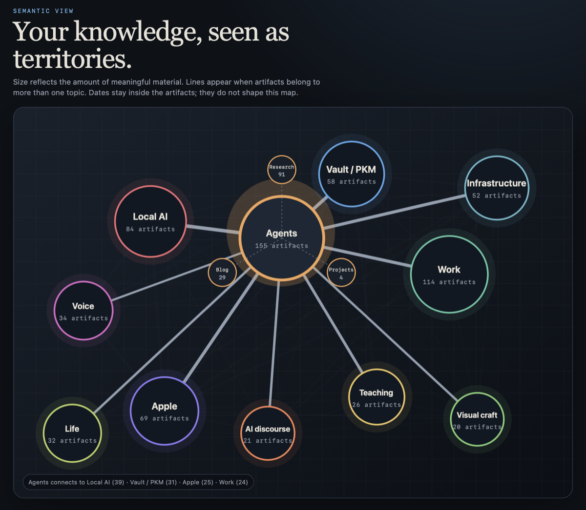
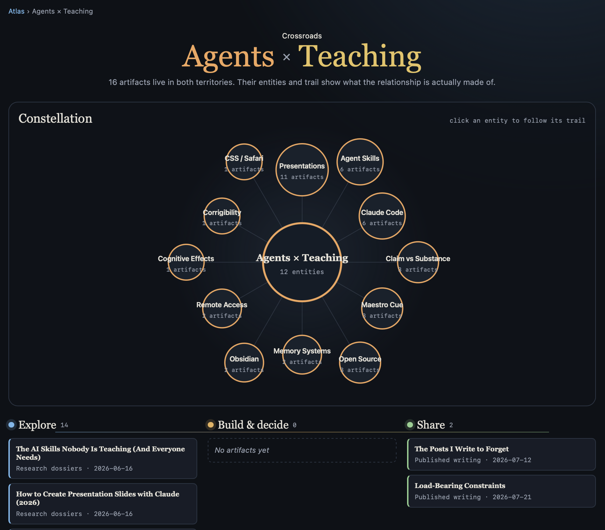
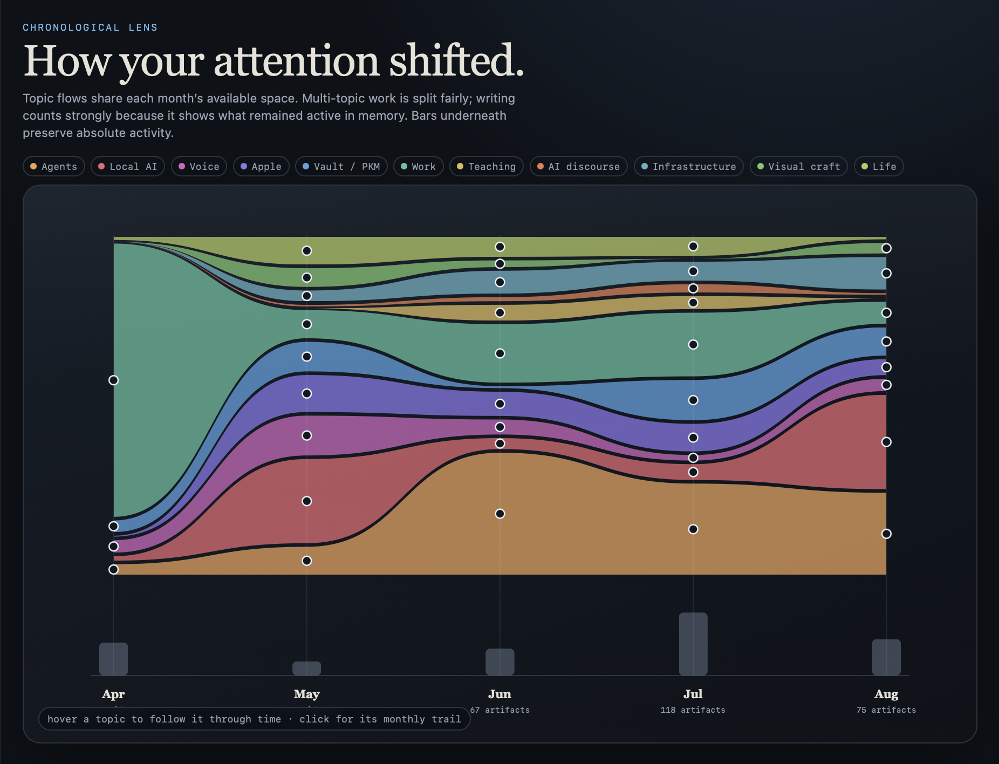
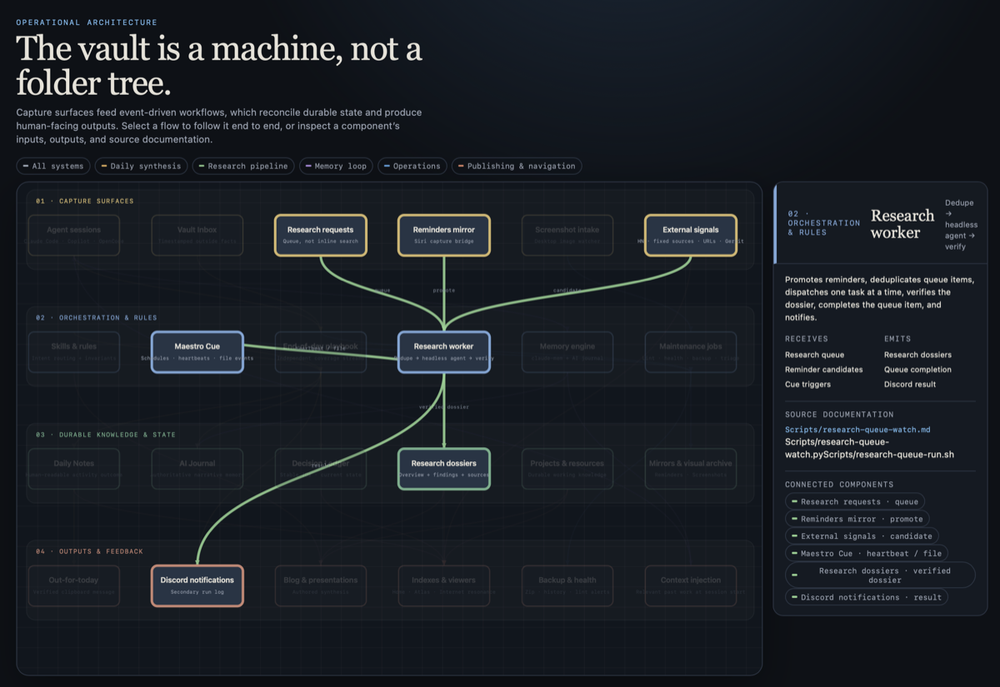

Everything Was Correct. Nothing Was Interesting.
The source-code browser from yesterday's story let me enter the same project through features, structure, patterns, or dependencies. The next morning, I pointed the idea at my Obsidian vault.
It came back with folders, broken links, and a list of notes that linked to each other. I had turned a way to explore into a plumbing report.
Four ways into the same project
The original browser never made me start with folders; I only needed to know what interested me. I asked the AI to bring that into my Obsidian vault — the notes app where everything I keep lives — and opened the result on my iPad.
I did not like what I saw.
The same mess, prettier
The Insights tab showed the first problem. It listed my most-linked notes, broken links, and notes linking nowhere — accurate, measurable, and I had no interest in browsing any of it. My decision notes, deliberately linked to everything they touch, overshadowed the rest.
The tag cloud had drowned too: machine-classified screenshots had flooded it with hundreds of tags nobody authored. Curated tags invite you to look around; generated ones are noise.
The viewer showed the exact mess I was already dealing with, just through a different lens.
I had made the problem harder
The AI was not at fault. My vault is organized for a different job.
My vault is mostly chronological. Research and tasks live in folders indexed by month and date. The actual summary inside each task folder is called 📌 Overview.md.
That structure works. I can jump to the newest work, close a month, or browse backward through the history. It does not tell a script what hundreds of files named “Overview” are about.
You can order books by size, by color, by year, by topic. Every ordering is right for one question and wrong for all the others. Mine was ordered by date, and I was asking about topics.
The labels on my notes were uneven too. Blog posts carried tags with a vocabulary built from thirteen years of my saved link collection. My research had none. So I asked my AI to build them retroactively.
The first viewer had exposed the flaws. I decided to fix the notes before pointing the script at them again.
Dates stay inside the notes
I told the AI what I actually wanted: “The most important thing for me is the relationship of the different topics, not the relationship to time. I want to explore the topics. That's the whole idea of this.”
Then I suggested a two-dimensional graph. The size of a circle could show how much material belonged to a subject. Lines could show where subjects shared material.
The folders disappeared. Eleven territories took their place.

Agents sat in the middle with 155 notes, projects, and posts. The lines showed what the territories shared — 39 pieces between Agents and Local AI alone.
When I hovered over a territory, three smaller circles appeared: Research, Projects, and Blog. I could see whether I had only explored a subject, built something from it, or written about it. Clicking one jumped straight to those notes.
For the first time, opening the viewer did not begin with knowing a filename.
What lives between two circles?
The lines soon became more interesting than the circles.
I asked what else the lines could tell. The AI proposed treating each one as a crossroads, and I opened one to see.
Clicking the line between Agents and Teaching opened the 16 pieces that belonged to both. The page pulled out what they had in common: presentations, memory systems, and the difference between a claim and its substance.

Below the constellation, the material formed a trail. Research sat under Explore. Things I had made or decided would sit in the middle. Two published posts waited under Share.
The same notes were no longer merely connected. The connection had contents.
It looked like a modern art painting
Dates had been a problem for the first versions of this map, but I still cared about them. So I asked how I could visualize my attention over time.
The first version put circles on a timeline, and they refused to come out right. We kept steering — through a subway map, into flowing lanes.
The final result stacked the topics into colored streams. Each topic received a percentage. Underneath, grey bars showed the absolute amount of activity, and clicking a month opened everything that happened during it.
We agreed that writing counted more. A subject that stayed in my head long enough to write about it was more important.

In April, Work occupied almost the whole picture — that was me setting up the project docs inside the vault. Local AI expanded in May. Agents became the largest stream through June and July. AI discourse widened sharply in August.
After some tries to make everything look equidistant, I said: “I think I like it more. Now it looks like a modern art painting.”
The vault is a machine
I wanted one more view, of the machinery itself — the pipelines and rules that run the vault. “I have no idea how I would visualize that,” I wrote, “but I trust you.”
The result arranged the vault into four layers: things coming in, rules acting on them, durable knowledge, and things going out. Selecting one flow dimmed everything else.

The screenshot follows one research request. It enters through the queue, can be promoted from reminders or suggested by external signals, passes through the research worker, becomes a dossier, and ends with a Discord notification. Clicking a component shows what it receives, what it emits, and which documents define it.
The four images here are the views that can explain themselves without opening the private notes beneath them. I had renamed the employer territory to Work while we were still building — I wanted maps I could share without cleaning them afterward. The Decisions view stayed out for the opposite reason: its shape is striking, but it means nothing without showing the decisions themselves.
Make it your own
The first Python script could scan every file, count every link, and draw every relationship. That was enough to produce a plumbing report. A visually pleasing plumbing report.
If you want one for your own notes, the secret is that you never need to specify the result. Point the AI at something you liked — mine was the source-code browser — and say what you liked about it. Look at every attempt and say what you don't want to see. When a lens exposes messy notes, fix the notes, not the lens. And let every view hide almost everything, so one relationship becomes visible.
The plumbing was still there. Yesterday's story ended with a plugin that felt like seeing the Matrix: the structure of the code fades, the flow shows. A day later, my notes learned the same trick.